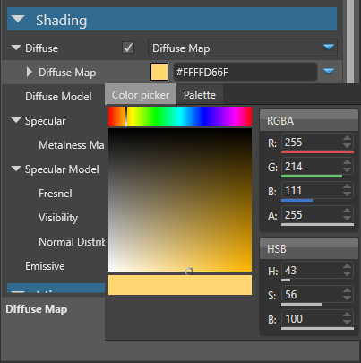
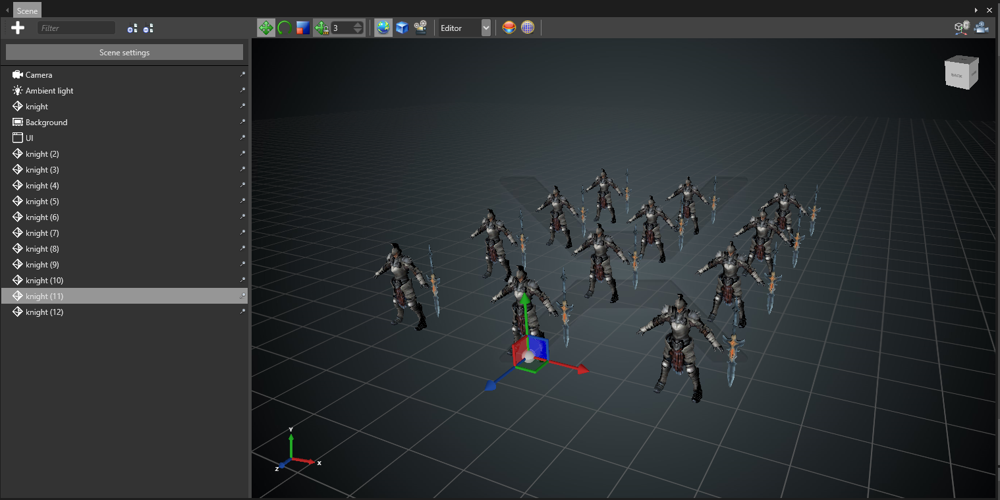

Manage assets
Warning
Приносим свои извинения за неудобства. Для этой страницы нет перевода на русский язык. Она будет отображаться на английском языке.
Beginner
This page explains how to edit and manage your assets.
Edit assets in the Property Grid
You can edit most assets using the Property Grid. By default, this is in the top-right of Game Studio.
For example, to change the color of a material asset::
In the Asset View (in the bottom by default), select the material.

In the Property Grid, under Shading > Diffuse, next to Diffuse Map, click the colored box, which displays the asset color (yellow in this example).
The color picker opens.

Select a new color for the asset.

The Asset Preview (bottom right by default) displays asset changes in real time.
The Asset View indicates assets with unsaved changes with asterisks (*).

Edit assets using dedicated editors
Game Studio has dedicated editors for the following asset types:
- prefabs
- scenes
- sprite sheets
- UI pages
- UI libraries
- scripts
For example, you edit scenes in the Scene Editor.

To open the dedicated editor for these types of asset:
- double-click the asset, or
- right-click the asset and select Edit asset, or
- select the asset and type Ctrl + Enter
Organize assets
We recommend you organize your assets into subfolders by type. This makes projects much easier to manage, especially as they become large.

Assets are contained in the Assets folder of your project package. You can see the project in the Solution Explorer (by default shown in the bottom left).
- To create a subfolder, right-click the parent folder and select Create subfolder.
- To move an asset, select one or more assets in the Asset View and drag and drop them to the folder.
Note
When you move an asset, Game Studio updates all references to other assets inside the asset.
Tip
To see the URL and type of an asset, move the mouse over the asset thumbnail.
Include assets in the build
By default, Stride doesn't include every asset when you build the game. This is because you might not need every asset at runtime — for example, if the asset is incomplete.
Stride only includes assets which:
- you've specifically marked for inclusion (root assets), or
- are referenced by a root asset
Game Studio indicates whether an asset is included with a colored icon in the top-left of the asset thumbnail.
| Color | Status |
|---|---|
| Blue
|
The asset is a root asset and included in the build. |
| Green
|
The asset is referenced by a root asset and included in the build. |
| Gray
|
The asset isn't included in the build. |

If you plan to load an asset at runtime using scripts, make it a root asset. To do this:
click the gray dot in the top-left of the thumbnail, or
right-click the asset and select Include in build as root asset
Asset View options
To change the Asset View options, click the eye icon in the Asset View toolbar.
You can:
- display assets in the selected folder only, the selected folder and subfolder
- sort assets by name, type, unsaved changes, and modification date
- switch between tile view (default) and grid view
Filter assets
When browsing assets in the Asset View (in the bottom by default), you can filter by name, tag, type, or a combination of all three.
The tag and name filters are "and" filters. For example, if you filter by tag:level and name:knight, the Asset View only displays assets with the tag "level" and the name "knight".
Type filters are "or" filters. For example, if you filter by type:animation and type:texture, the Asset View only displays assets that are animations or textures.
Add a filter
In the Asset View, type in the filter bar.
Game Studio displays a list of matching filters (name, type, or tag).

To filter by name, press Enter.
To filter by a tag or type, select tag or type filters in the drop-down list.
Game Studio applies the filter and shows matching assets in the Asset View.
You can add multiple filters. Name filters are green, tag filters are blue, and type filters are orange.

Toggle filters on and off
To toggle a filter on and off without removing it, click it. Disabled filters have darker colors.
Remove a filter
To remove a filter, click the X icon in the filter tag.